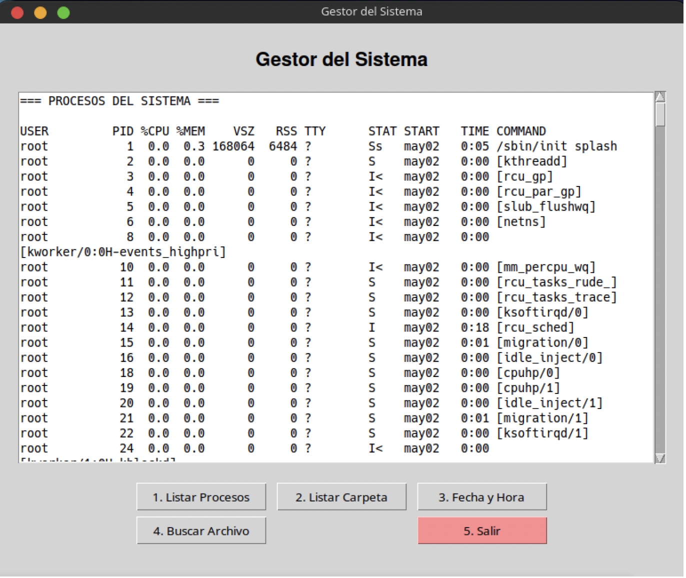

RG602: Gestor de procesos con PowerShell (Python + tkinter)¶
- Reto individual de depuración (RG602)
- Puntuación: 30 puntos.
- Criterios evaluados: CE2d (gestión de procesos desde PowerShell), CE2g (herramienta de gestión y documentación).
- Duración estimada: 1–2 sesiones.
- Entorno: Windows con PowerShell (cmdlets:
Get-Process,Stop-Process,Start-Process).

Objetivos¶
Durante este reto depurarás un script en Python con interfaz gráfica (tkinter) que actúa como gestor de procesos usando comandos PowerShell (apartado 4 de la unidad). El programa contiene errores introducidos a propósito.
Al finalizar serás capaz de:
- Identificar líneas de código alteradas que provocan fallos funcionales.
- Argumentar por qué cada error produce un comportamiento incorrecto.
- Corregir el código para que todas las opciones del menú funcionen (listar procesos, top por CPU, finalizar por PID, iniciar proceso, servicios de Windows, salir).
- Entregar el script corregido y un documento de corrección con justificación.
Requisitos previos¶
- Python 3 con los módulos estándar:
tkinter,subprocess. - Windows con PowerShell instalado (habitual en Windows 10/11). Se puede usar
powershell.exeopwsh.exe(PowerShell Core). - Si no tienes experiencia con Python, puedes apoyarte en la Introducción a Python.
tkinter en Windows
Si falta tkinter, reinstalar Python marcando la opción "tcl/tk and IDLE" o instalar el paquete correspondiente.
Parte 1: Comportamiento esperado del programa¶
El menú debe ofrecer las siguientes opciones; cada botón debe ejecutar la función que corresponde y mostrar el resultado en el área de texto.
| Opción | Descripción | Cmdlet(s) PowerShell utilizados |
|---|---|---|
| 1 | Listar procesos del sistema. | Get-Process |
| 2 | Top N procesos por uso de CPU. | Get-Process \| Sort-Object CPU -Descending \| Select-Object -First N |
| 3 | Finalizar un proceso por PID. | Stop-Process -Id PID |
| 4 | Iniciar un proceso (p. ej. notepad). | Start-Process |
| 5 | Listar servicios de Windows (equivalente al apartado 6 systemctl). | Get-Service |
| 6 | Salir. | — |
Parte 2: Guía de ejecución (Python + PowerShell)¶
Requisitos¶
- Python 3 con
tkinterysubprocess. - Windows con PowerShell (
powershell.exeopwsh.exeen PATH).
Uso de subprocess para llamar a PowerShell¶
En Python se ejecutan comandos de PowerShell invocando el ejecutable y pasando el script con -Command:
import subprocess
# Una sola línea de PowerShell
result = subprocess.run(
['powershell', '-NoProfile', '-Command', 'Get-Process'],
capture_output=True,
text=True,
timeout=30
)
print(result.stdout)
# Varias líneas: usar ; dentro de la cadena
cmd = 'Get-Process | Sort-Object CPU -Descending | Select-Object -First 10 Id, ProcessName, CPU'
result = subprocess.run(
['powershell', '-NoProfile', '-Command', cmd],
capture_output=True,
text=True,
timeout=30
)
- -NoProfile: arranca PowerShell sin cargar el perfil (más rápido).
- -Command: la cadena que sigue es el script a ejecutar.
Cómo ejecutar el script¶
# En Windows, desde PowerShell o CMD
python gestor_procesos_powershell.py
# o
py gestor_procesos_powershell.py
Parte 3: Código con errores¶
A continuación se muestra el script con numeración de línea para facilitar la corrección. Hay varios errores que hacen que los botones no ejecuten la acción correcta o que el comando PowerShell sea erróneo.
(1) import subprocess
(2) import tkinter as tk
(3) from tkinter import messagebox, scrolledtext, simpledialog
(4)
(5) PS_EXE = "powershell"
(6)
(7) class GestorProcesosPowerShellApp:
(8) def __init__(self, root):
(9) self.root = root
(10) self.root.title("Gestor de procesos (PowerShell)")
(11) self.root.geometry("700x500")
(12) self.create_widgets()
(13)
(14) def create_widgets(self):
(15) main_frame = tk.Frame(self.root, padx=20, pady=20)
(16) main_frame.pack(fill=tk.BOTH, expand=True)
(17) self.output_area = scrolledtext.ScrolledText(
(18) main_frame, wrap=tk.WORD, width=70, height=18, font=("Consolas", 9)
(19) )
(20) self.output_area.pack(pady=10, fill=tk.BOTH, expand=True)
(21) btn_frame = tk.Frame(main_frame)
(22) btn_frame.pack(pady=5)
(23)
(24) tk.Button(btn_frame, text="1. Listar procesos", command=self.top_cpu, width=18).grid(row=0, column=0, padx=3, pady=2)
(25) tk.Button(btn_frame, text="2. Top 10 por CPU", command=self.listar_procesos, width=18).grid(row=0, column=1, padx=3, pady=2)
(26) tk.Button(btn_frame, text="3. Finalizar proceso (PID)", command=self.iniciar_proceso, width=24).grid(row=0, column=2, padx=3, pady=2)
(27) tk.Button(btn_frame, text="4. Iniciar proceso", command=self.finalizar_proceso, width=18).grid(row=1, column=0, padx=3, pady=2)
(28) tk.Button(btn_frame, text="5. Servicios (Get-Service)", command=self.listar_procesos, width=24).grid(row=1, column=1, padx=3, pady=2)
(29) tk.Button(btn_frame, text="6. Salir", command=self.root.quit, width=12, bg="#ff9999").grid(row=1, column=2, padx=3, pady=2)
(30)
(31) def clear_output(self):
(32) self.output_area.delete(1.0, tk.END)
(33)
(34) def listar_servicios(self):
(35) self.clear_output()
(36) code, out, err = self.run_ps('Get-Service')
(37) self.output_area.insert(tk.END, "=== SERVICIOS DE WINDOWS (Get-Service) ===\n\n")
(38) if code == 0:
(39) self.output_area.insert(tk.END, out)
(40) else:
(41) self.output_area.insert(tk.END, f"Error: {err}\n")
(42)
(43) def run_ps(self, script):
(44) try:
(45) r = subprocess.run(
(46) [PS_EXE, '-NoProfile', '-Command', script],
(47) capture_output=True,
(48) text=True,
(49) timeout=30
(50) )
(51) return (r.returncode, r.stdout or "", r.stderr or "")
(52) except subprocess.TimeoutExpired:
(53) return (-1, "", "Timeout")
(54) except Exception as e:
(55) return (-1, "", str(e))
(56)
(57) def listar_procesos(self):
(58) self.clear_output()
(59) code, out, err = self.run_ps('Get-Process')
(60) self.output_area.insert(tk.END, "=== PROCESOS DEL SISTEMA ===\n\n")
(61) if code == 0:
(62) self.output_area.insert(tk.END, out)
(63) else:
(64) self.output_area.insert(tk.END, f"Error: {err}\n")
(65)
(66) def top_cpu(self):
(67) self.clear_output()
(68) script = "Get-Process | Sort-Object CPU -Descending | Select-Object -First 5 Id, ProcessName, CPU"
(69) code, out, err = self.run_ps(script)
(70) self.output_area.insert(tk.END, "=== TOP 10 PROCESOS POR CPU ===\n\n")
(71) if code == 0:
(72) self.output_area.insert(tk.END, out)
(73) else:
(74) self.output_area.insert(tk.END, f"Error: {err}\n")
(75)
(76) def finalizar_proceso(self):
(77) pid_str = simpledialog.askstring("Finalizar proceso", "Introduce el PID del proceso a finalizar:")
(78) if not pid_str or not pid_str.strip():
(79) return
(80) self.clear_output()
(81) code, out, err = self.run_ps(f'Stop-Process -Id {pid_str.strip()} -Force')
(82) self.output_area.insert(tk.END, f"=== FINALIZAR PROCESO (PID {pid_str.strip()}) ===\n\n")
(83) if code == 0:
(84) self.output_area.insert(tk.END, f"Proceso {pid_str.strip()} finalizado.\n")
(85) else:
(86) self.output_area.insert(tk.END, f"Error: {err}\n")
(87)
(88) def iniciar_proceso(self):
(89) nombre = simpledialog.askstring("Iniciar proceso", "Nombre del ejecutable (p. ej. notepad):")
(90) if not nombre or not nombre.strip():
(91) return
(92) self.clear_output()
(93) code, out, err = self.run_ps(f'Start-Process -Name "{nombre.strip()}"')
(94) self.output_area.insert(tk.END, f"=== INICIAR PROCESO ({nombre.strip()}) ===\n\n")
(95) if code == 0:
(96) self.output_area.insert(tk.END, f"Proceso '{nombre.strip()}' iniciado.\n")
(97) else:
(98) self.output_area.insert(tk.END, f"Error: {err}\n")
(99)
(100) if __name__ == "__main__":
(101) root = tk.Tk()
(102) app = GestorProcesosPowerShellApp(root)
(103) root.mainloop()
Tu tarea¶
- Identificar las líneas de código alteradas que producen los errores funcionales.
- Argumentar por qué cada una provoca el fallo (qué hace mal y qué debería hacer).
- Entregar el código corregido y un breve documento con la lista de líneas corregidas y la justificación.
Entregables¶
- Código Python corregido: un único fichero que ejecute en Windows con las seis opciones funcionando correctamente (incluida la de servicios con Get-Service).
- Documento de corrección (Markdown o PDF) con: número de línea o fragmento erróneo, explicación del error y corrección aplicada.
Criterios de evaluación¶
| Criterio | Puntos | Descripción |
|---|---|---|
| Identificación de errores | 8 | Se señalan correctamente todas las líneas o fragmentos con errores. |
| Justificación | 8 | Se argumenta por qué cada uno produce un fallo funcional. |
| Código corregido | 10 | El script ejecuta correctamente y todas las opciones del menú funcionan. |
| Documento de corrección | 4 | Documento ordenado, comprensible y con correcciones aplicadas. |
| Total | 30 |
Subapartados relacionados¶
- 06 Procesos del Sistema — 4. Gestión de procesos en PowerShell:
Get-Process,Stop-Process,Start-Process.
Referencia¶
- Documentación de la unidad: 06 Procesos del Sistema — Gestión en PowerShell.